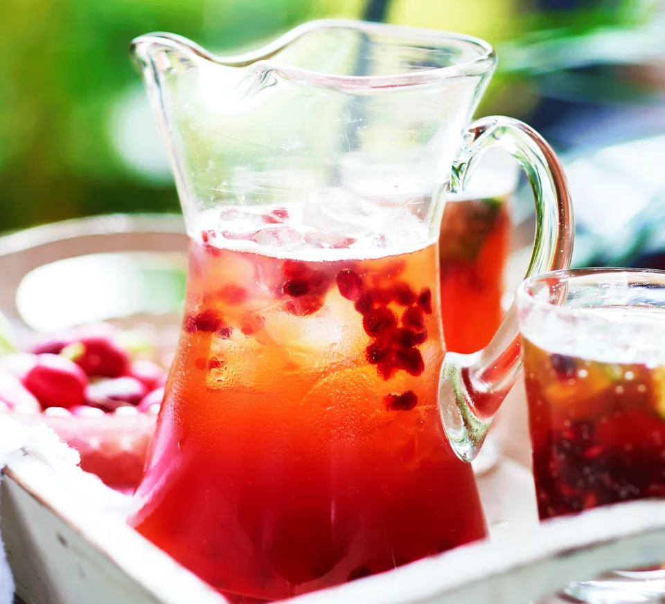

Pomegranate Pimm's

At least some of your five a day!
Add an extra fruity twist to this classic summer drink with pomegranate juice and seeds - double up the quantities to please a crowd
Ingredients
- 200ml Pimm's
- 200ml pomegranate juice
- 15cm chunk of cucumber
- 100g pomegranate seeds
- 600ml chilled lemonade
Steps
- Mix the Pimm’s and pomegranate juice in a big jug and leave in the fridge to chill. Dice the cucumber.
Tip the cucumber and pomegranate seeds into a jug. When you’re ready to serve, stir the chilled lemonade into the Pimm’s mix
and add some ice to the prepared glasses.
Home